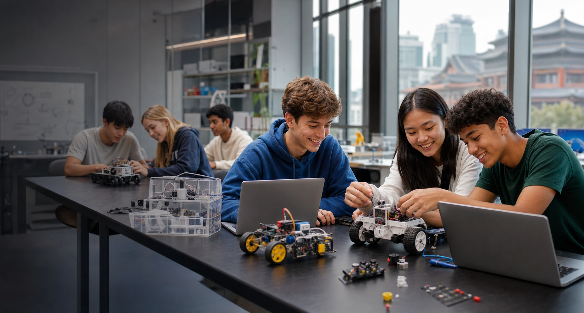
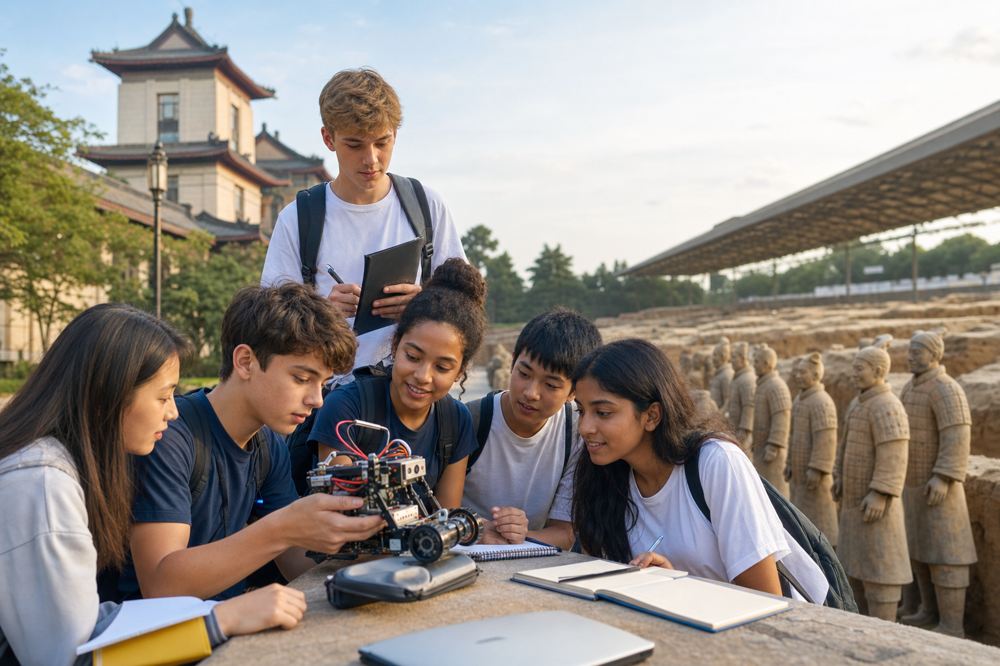
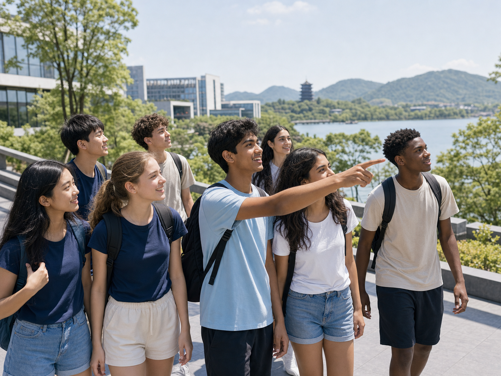
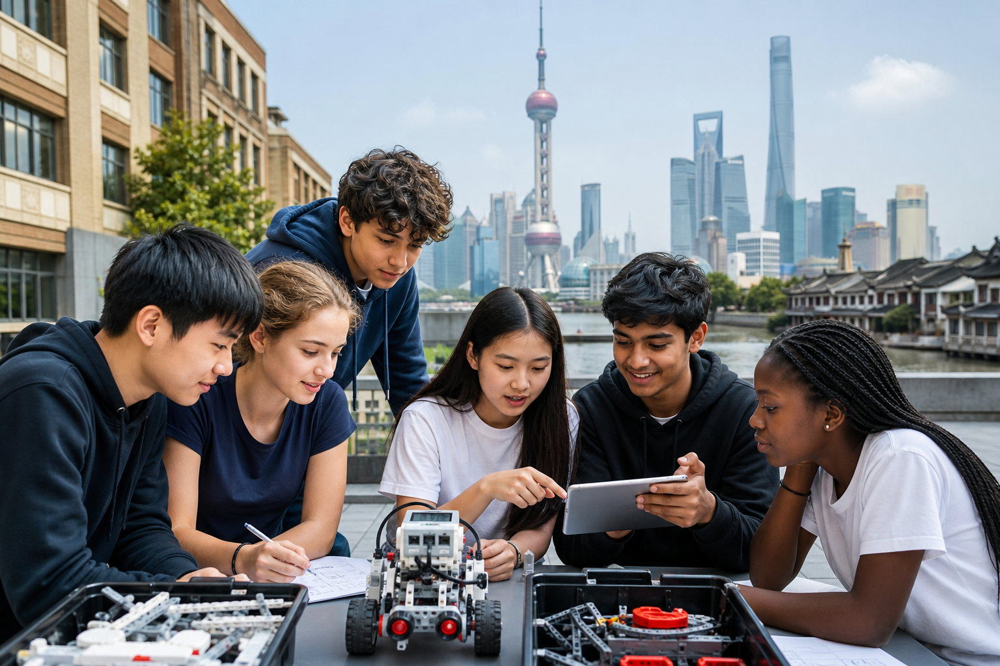
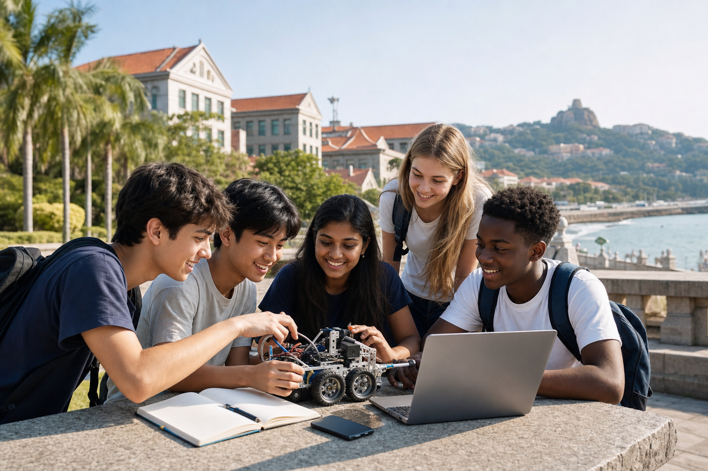
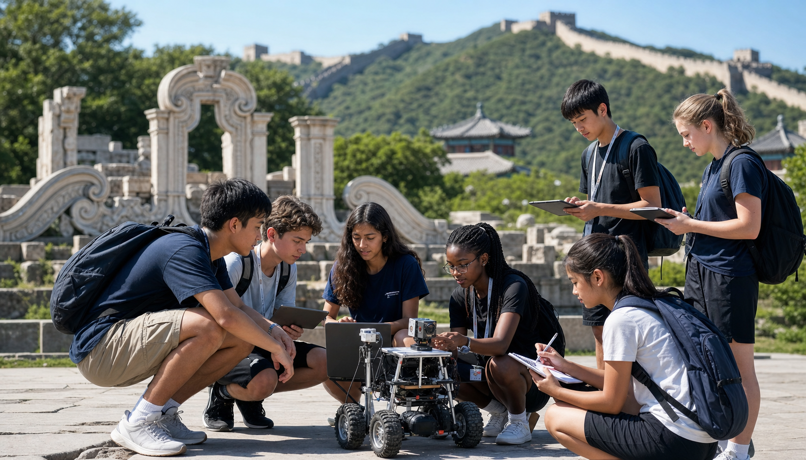

适合学生
建议 13-17 岁青少年参加，适合文化和人种多样的国际学生团队；可按零基础、进阶或学校团组调整难度。
Student AI + Robotics Summer Camp in China
20 天青少年项目：AI 素养、机器人工程、团队协作、高校参访、文化 road trip、机器人比赛、成果展示与结营晚宴。4399.99 美元起；不含往返中国机票。
这是一套 AI + Robotics 主题营，不是单纯观光团。学生会学习、搭建、调试、带着任务出行，并在结营前完成机器人比赛和成果展示。
建议 13-17 岁青少年参加，适合文化和人种多样的国际学生团队；可按零基础、进阶或学校团组调整难度。
机器人结构、编程逻辑、传感器、AI 素养、负责任科技、工程笔记、团队协作和展示表达。
每组完成机器人作品、比赛成绩、设计说明、演示素材，以及和城市 route 相关的学习反思。

短课、搭建冲刺、导师反馈、调试、展示训练和每日 reflection。

机器人挑战赛、工程评审、成果展示、证书、导师点评和结营晚宴。
日历按周一至周日排列。Day 1 是周六，因此第一行前五格为空白准备格。

抵达、接机/接站、入住、安全说明、破冰。

Warm welcome、分组、机器人套件介绍、欢迎晚餐。
机器人结构、电机、传感器和第一次搭建。

编程逻辑、运动控制、测试记录。

AI 素养、数据偏差、视觉识别概念。

团队工程工作室，准备 road trip 观察任务。

Road Trip 1A：高校或创新空间参访。

Road Trip 1B：景点游览与文化学习。

休息、自习或报名参加深度体验。
第二页从 Day 10 开始，Day 17 机器人比赛固定在周一；PDF 中每个日期格不会被分页切断。

机器人任务设计和得分策略。

传感器、自主运行、校准与数据记录。

调试冲刺、故障分析和同伴评审。

工程笔记、演示脚本和路演准备。

Road Trip 2A：第二次高校或创新参访。

Road Trip 2B：路线城市重点景点游览。

休息、彩排、机器人维修和材料检查。
机器人比赛、成果展示和结营晚宴。

上海城市游览，科技馆或动物园视开放安排。

行李整理、项目文件导出、航班确认。

根据航班时间离境。
所有路线共享同一套 AI + Robotics 课程主轴，可根据学校目标、航班、季节和供应商档期选择城市。

参观西安交通大学，结合工程启发；游览兵马俑和历史文化城市。

上海城市风光，参访复旦和上海交大，可前往苏州、无锡游览。

参观浙江大学、西湖大学，游览西湖和西塘水乡古镇。

参观厦门大学，游览周边车行几小时可达的著名景点。

参观清华和北大，游览长城、圆明园等著名景点。
AI + Robotics 学生营需要清晰的课程、监管、交通和应急边界。